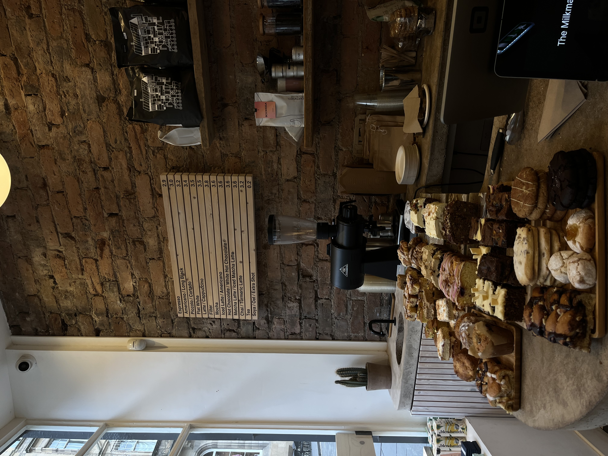

WARM
GOOEY
INDULGENT
Chocolate Chip Cookies
Description
Soft on the inside and slightly crispy on the edges, these cookies are a timeless dessert that everyone loves.
Ingredients
- 2 ¼ cups all-purpose flour
- ½ tsp baking soda
- 1 cup unsalted butter, softened
- ½ cup white sugar
- 1 cup brown sugar
- 1 tsp vanilla extract
- 2 large eggs
- 2 cups chocolate chips
- A pinch of salt
Steps
- Preheat the oven to 180°C (350°F).
- In a bowl, mix flour, baking soda, and salt.
- In another bowl, beat butter, white sugar, and brown sugar until creamy.
- Add the eggs and vanilla, and mix well.
- Gradually add the dry ingredients, stirring until combined.
- Fold in the chocolate chips.
- Drop spoonfuls of dough onto a baking sheet lined with parchment paper.
- Bake for 10–12 minutes or until golden brown.
- Let cool before serving.